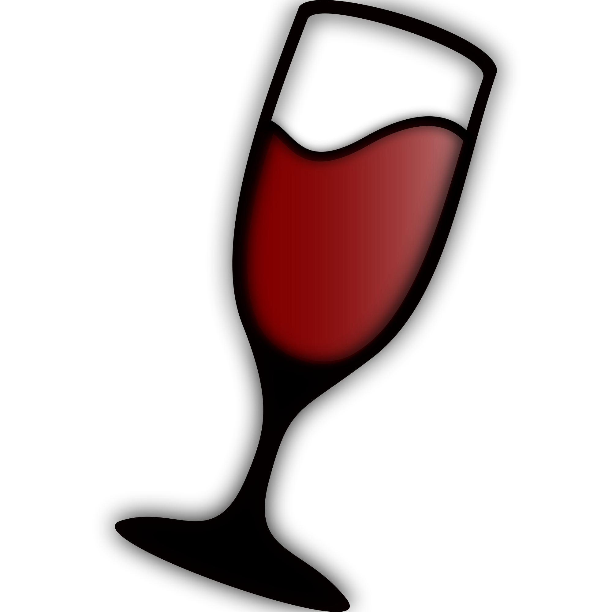

Games Software

Wine
Wine (recursive acronym for Wine Is Not an Emulator) is a free and open source compatibility layer software application that aims to allow applications designed for Microsoft Windows to run on Unix-like operating systems.
PlayOnLinux
PlayOnLinux is a piece of software which allows you to easily install and use numerous games and apps designed to run with Microsoft Windows.

Steam
Delivers a range of games straight to a computer's desktop. Includes automatic updates, lists of games and prices.